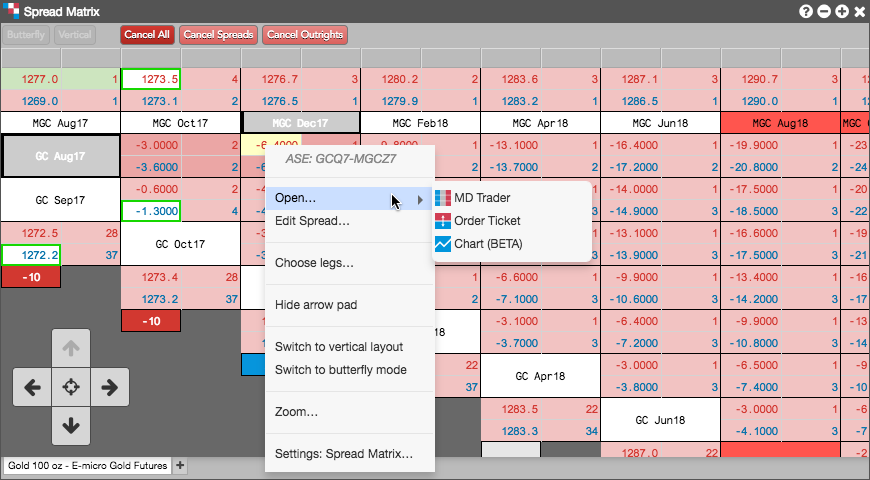
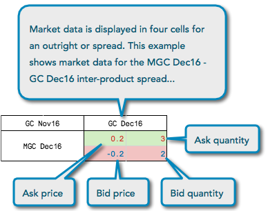

Using the Autospreader tab when opening the Spread Matrix, you can display market data for an inter-product spread. Autospreader® calculates the synthetic spread prices for inter-product spreads.
Right-click in the market data cells for a spread to view the context menu for the calendar spread. You can also right-click a single contract to open the context menu for the contract. In the context menu, select Open... to open an MD Trader, Order Ticket, or Chart widget that displays the market data for the selected spread or outright contract.

Spread Matrix displays four pieces of market data for each outright contract or spread. The information is displayed in one of four cells that make up a larger grouping. The Spread Matrix displays Ask Price, Ask Quantity, Bid Price, and Bid Quantity.

The Spread Matrix calculates implied prices instead of using the exchange implieds, and displays the calculated implied data even when it is not at the best price. Implied functionality varies by exchange, which determines how the implied prices function in TT.
To display prices above quantities for each outright or spread, enable (check) the Show prices above quantities option in Settings: Spread Matrix.